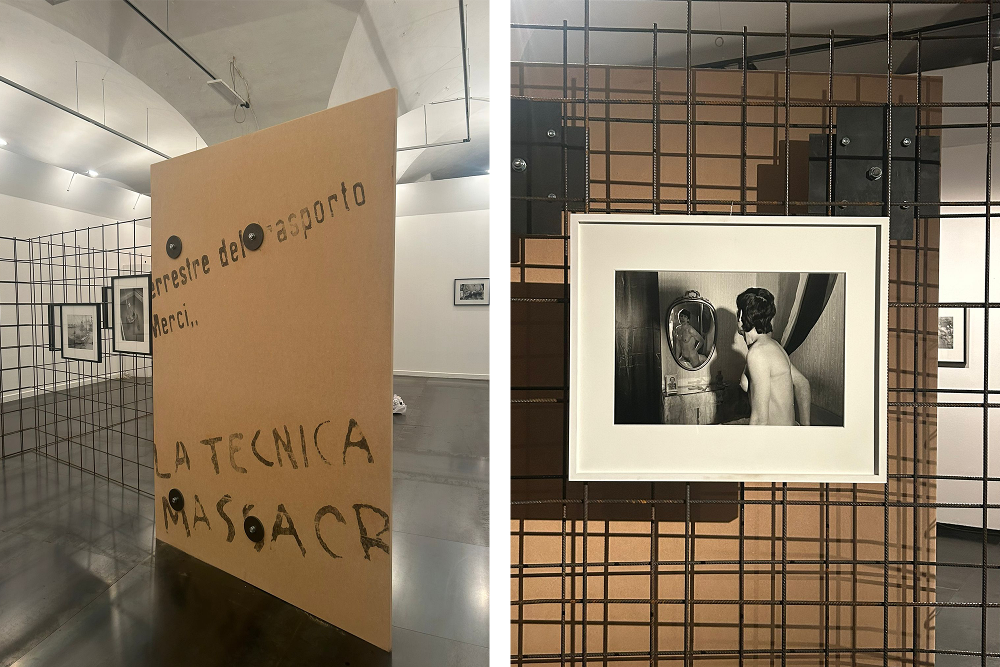
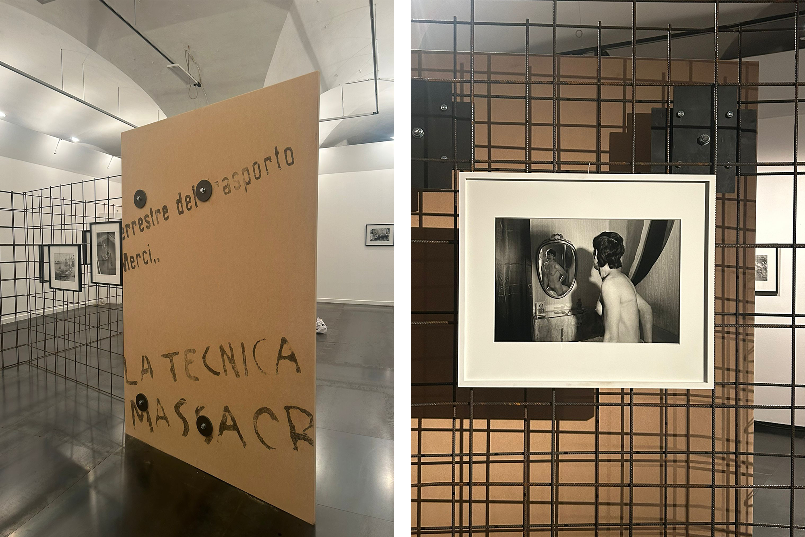

Lisetta Carmi
Part of the design team with Cookies and DRAMA y COMEDIAS for the exhibition of the photographer Lisetta Carmi at Palazzo Ducale, Genoa.Looking through the enormous amount of photographs that she left behind, one body of work was consistent through the different assignments and geographies; the graffitied walls that she insatiably documented in every city and town. The walls speaking the voices of the citizens. The walls shouting radical antifascist slogans messages that must have resonated deeply with someone of Lisetta’s background.
The exhibition design focusses on the wall; staging room after room the construction of its surfaces. The wall as a device, as a border and a public interface that is constantly subject to social overwriting, inevitably political.
Designer
With: Cookies and DRAMA y COMEDIAS (Rachele Calisti, Federico Martelli, Giuseppe Ricupero)
For: Palazzo Ducale, Genoa
Photographs: Federico Martelli


 
